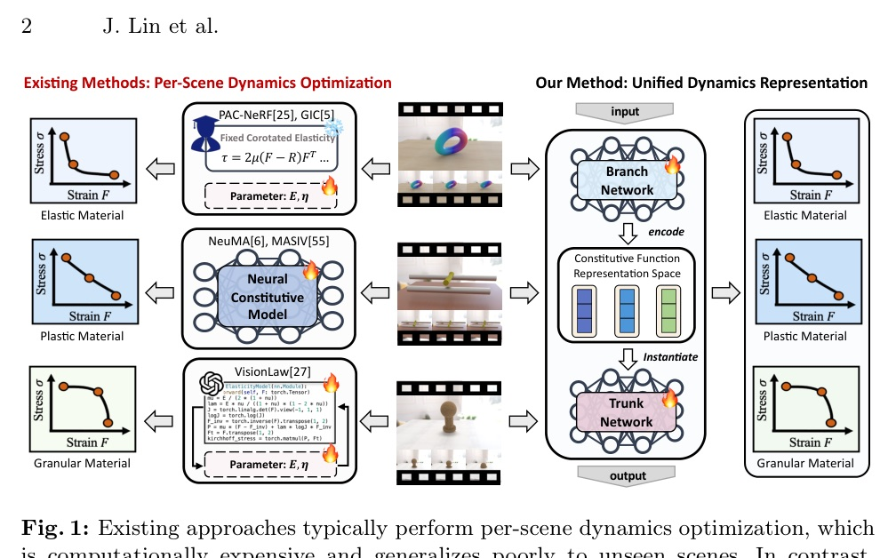
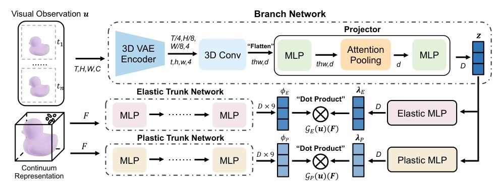
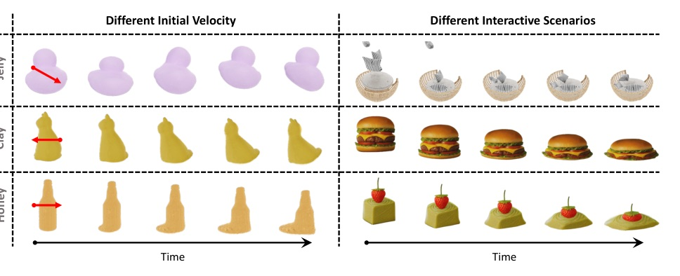
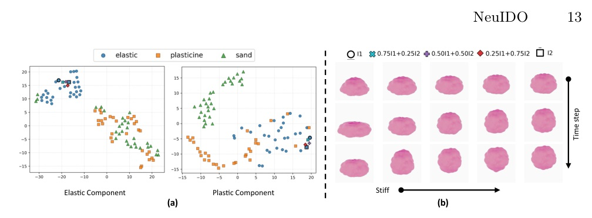

把「看見物體怎麼動」變成可重用的本構動力學表示，而不是每個場景重新最佳化一次。

先學「物理定律的空間」，再把影片投影進去。
NeuIDO 的重點不是生成下一幀，而是直接推斷可模擬的內在動力學。
一旦 trunk 的 basis 已經學好，新場景只需要預測係數，不必重新搜尋整個材料模型。

| Method | Avg. CD |
|---|---|
| PAC-NeRF | 114.80 |
| NCLaw | 12.860 |
| NeuMA | 1.329 |
| VisionLaw | 1.620 |
| NeuIDO zero-shot | 1.643 |
| NeuIDO few-shot | 1.216 |
1.643 -> 1.216 average CD
只用 100 adaptation iterations。
論文對比：NeuMA 即使由 NCLaw 預訓練初始化，仍約需 1,000 iterations。
| Scene | Random PSNR/CD | Zero-shot PSNR/CD | Few-shot PSNR/CD |
|---|---|---|---|
| Scene 1 | 29.14 / 35.30 | 32.60 / 1.01 | 34.66 / 0.54 |
| Scene 2 | 27.46 / 168.40 | 31.21 / 4.08 | 32.73 / 0.79 |

JellyDuck 在改變初速後仍呈現 elastic deformation/recovery；將 clay dynamics 轉到 Hamburger 時仍出現慢速沉降。
有效的原因不是「影片 encoder 更強」。
而是它把 visual inference 限制在一個先由物理資料塑形過的 latent manifold 裡。

| Latent dim. | Stage-I MSE | CD change vs. 128-D |
|---|---|---|
| 32 | 1.023e3 | -9.679% |
| 64 | 8.392e2 | -9.616% |
| 128 default | reference | reference |
| 256 | 6.885e2 | +1.459% |
原文將正向 CD change 解讀為較佳；數值仍有 scene-specific differences。
| Scene | Mean CD | Variance |
|---|---|---|
| Ball | 1.277 | 5.228e-2 |
| Cat | 0.616 | 7.496e-3 |
| Pawn | 0.856 | 5.033e-3 |
| Fish | 0.941 | 1.229e-2 |
這支撐「pretrained representation 是可靠 adaptation prior」的說法，但不是對跨資料集的穩定性保證。
Existing approaches typically perform per-scene dynamics optimization, which is computationally expensive and generalizes poorly to unseen scenes.
既有方法通常針對每個場景單獨做動力學最佳化，成本高，對未見場景的泛化也差。Fig.1 p.2
This two-stage design effectively transfers knowledge from strongly supervised constitutive data to weakly supervised visual observations.
兩階段設計把強監督的本構資料知識轉移到弱監督的視覺觀察。Sec.3.3 p.7
The learned latent space is discriminative across constitutive families and continuous within the dynamics manifold.
學到的 latent 空間能區分不同本構家族，並在動力學流形內保持連續。Sec.4.4 p.14
Visual supervision alone is insufficient for reliably constraining intrinsic dynamics.
僅靠視覺監督不足以可靠地約束內在動力學。Appendix E p.29
不是用影片直接取代物理，而是用影片定位已經受物理資料塑形過的 dynamics manifold。